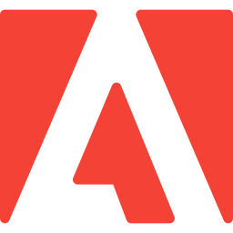
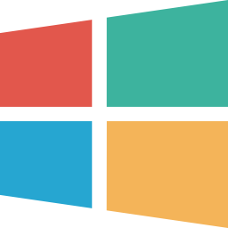

Elizabeth Nelson
Librarian -- Educator -- Lifelong Learner
Home
Education
Experience
Skills
Publications

Adobe Icon
Adobe Creative Cloud Icon
Adobe Illustrator Icon

Microsoft Windows Icon
Adobe Photoshop Icon
Google Icon